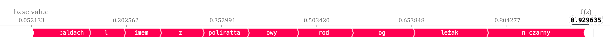

Chapter 1 BERT in the recommendation system
Authors: Mikołaj Pacek, Mateusz Kierznowski, Piotr Nawrot, Robert Krawczyk
Mentors: Michał Miktus (McKinsey & Company)
1.1 Introduction
E-commerce is one of the fastest-growing branches of business. Especially after the global pandemic, which has resulted in the transfer of a large proportion of sales to the internet and permanently changed consumers’ habits.
Every website offers thousands or millions of products. Matching the customer basket of goods is important and difficult. That is why every e-commerce company needs a perfectly fitted recommendation system, specially customized for their needs.
The next important tool after the recommendation system is XAI. It helps in building trust for decisions made by the recommendation system and allows for faster and more interpretable debugging.
Shumee is a fast-growing e-commerce start-up. In order to conquer the market, it needs to create a technological advantage over other e-commerce companies.
In the dataset of Shumee’s historical sales, there are only 7% of orders with more than 1 product. The recommendation system could help increase this number, which would lead to a bigger income.
The first step was cleaning the data. Then by using BERT we understood every product’s name, which allowed us to divide them into separate clusters.
The most important step in our work was to understand correctly the recommendation system. We used the two most popular approaches to model explanations - LIME and SHAP. It helped us to explain the performance of the recommendation system and highlight the differences between those two systems. In our case, LIME proved to be better for NLP.
The last step was to rate our model by using two metrics - percent of correct recommendations and value added, which means how much Shumee could gain with using our recommendations.
Based on these metrics we claim that our recommendation system works 20x better than random recommendations and it could be responsible for 83000PLN of Shumee’s income in 2020.
After all these steps we confirmed that our model is built well. We understood how it works, how it divides the clusters, or where it sees the connection between products. It is crucial from a business point of view, because it allows being sure, that it is not only working but it could be used it properly from a business point of view.
1.2 Data preprocessing
Data cleaning is a crucial step in machine learning, especially in NLP. Without the data preprocessing, the dataset is often a cluster of words that the computer does not understand. Thus we have created the pipeline to clean the data to create efficient clustering.
Preprocessing pipeline consists of:
- lowercasing all words
- removing size of the product (eg. 10 meters )
- removing length units (eg. 10 meters, szt)
- removing special marks (eg. “,” or “-”)
- removing brands from product descriptions (e.g. Pepco)

Figure 1 shows examples of product names before and after preprocessing. We chose to remove those features because we wanted our model to distinguish products based on their high-level semantic meaning and not based on very specific parameters such as the exact size of a chair (61x70x74cm).
1.3 Pipeline
Our main target is to build a pipeline, which could recommend products similar to products in the basket. The pipeline consist of 3 steps: - word2vec (BERT) - clustering - recommendation
1.3.1 BERT
BERT stands for Bidirectional Encoder Representations from Transformers. That language model can manage the ambiguity of the text by following steps. Firstly BERT is based on the Transformer architecture, which means that model adopts the mechanism of attention, weighing the influence of different parts of the input data. Secondly, BERT is deeply bidirectional which means that it learns information from both the left and the right sides of a word’s context during the training. The bidirectionality of the model is extremely important in understanding the context of a sentence. Provided illustration in figure 2 shows how BERT understands the context bidirectionally.
We used BERT to provide word embeddings for every product name within the data. Word embedding is a method used to represent discrete variables as continuous vectors. Thus words that are closer in the vector space are expected to be similar in their meaning. The quality of embedded words is vastly important in the following clustering phase. In our work, we used sentence_transformers module to provide the BERT model.
1.3.2 Clustering
Once we had a representation of products in the vector space we wanted to cluster them. The embeddings we got from BERT have a property, that semantically similar sentences are mapped to vectors that are close to each other. The intuition behind clustering is that we want to create groups of products that are similar to each other. However, it is not obvious how big such clusters should be.
1.3.2.1 Metrics
We defined 2 metrics that helped us to decide whether given clustering is satisfactory.
Percent of orders inside clusters- Historical orders contain multiple products. We count how many orders are fully contained in one cluster.Scraped categories fit- We scraped ‘path’ of business categories for each product in the dataset (for example productPółki ściennehas following path['Dom i ogród', 'Dom, mieszkanie', 'Regały']). Then for each cluster, we look at the most popular business category and check what percentage of the cluster is covered by this category. Then we average this value over all clusters.
To gather business categories, we implemented a web scraper that searches products on mall.pl website and scraped their categories.
1.3.2.2 Grid search
We chose 2 clustering algorithms (KMeans and AglomerativeClustering) and clustered the data with different hyperparameters (number of clusters). Then we plotted (Figure 3) metrics that we defined before. As the clustering algorithm for our pipeline, we chose Agglomerative Clustering because both metrics were a bit higher when compared with KMeans, however when it comes to choosing the number of clusters, plots show that there is a tradeoff between the two metrics. We chose 64 as a number of clusters because it balances metrics reasonably.
1.3.3 Recommendation
Given a new product (its name), we pass it to the BERT to get its embedding, then we search for the closest cluster. Then we compute the probability distribution over products from the cluster based on historical occurrences of these products (if a product was purchased frequently, it has a higher chance of being recommended). To calculate the distribution we used softmax function. Then we sample products to recommend from this distribution. We can sample as many products as we want, but in our case, we chose to sample 3 recommendations. Figure 4 shows how our recommendation pipeline is trained and how it generates recommendations for new products.
Table 1 shows some example recommendations.
| Product | Recommendation 1 | Recommendation 2 | Recommendation 3 |
|---|---|---|---|
| biustonosz edyta biały rozmiar f | biustonosz constanza rozmiar i | pas do pończoch ze stringami demetria pink rozmiar xl | biustonosz patricia biały rozmiar e |
| ogród roślina | roślinka sztuczna cementowej doniczce | pergola ogrodowa dla roślin pnących | komplet pudeł a4 kwiaty |
| krzesło | elastyczny pokrowiec na fotel z dżerseju szary | przenośny fotel kosmetyczny ekoskóra | elastyczny pokrowiec na fotel z dżerseju beżowy |
| świeczka | latarenka biała | latarenka mdf beż | kule świetlne led fioletowe |
| stolik ogrodowy | roślinka sztuczna cementowej doniczce | obrzeża trawnikowe stal galwanizowana | komplet pudeł a4 kwiaty |
| świeca walec biały | latarenka biała | kule świetlne led fioletowe | świecznik metalowy biały |
| żarówka edisona okrągła | kule świetlne led fioletowe | latarenka biała | latarenka mdf beż |
| biustonosz glam iii bc rozmiar | biustonosz ashley k451 rozmiar h | biustonosz olga biały rozmiar e | rajstopy satin kolor grafitto grafitowy rozmiar |
| czarny koszyk | koszyk na klamerki plastik rattan biały | koszyk nylon size średni beżowy | biały koszyk |
| kwiat czerwony w donicznce | roślinka sztuczna cementowej doniczce | furtka ogrodowa impregnowane drewno sosnowe fsc | pergole ogrodowe wieże |
| zestaw czarnych talerzy obiadowych | mat stołowych wzór | zestaw zakreślaczy | tarka czteroboczna stalowa |
| shorty męskie zielone rozmiar m | męskie rękawiczki czarne | męski pasek biznesowy skórzany brązowy | gra łowienie rybek rybki |
| spodnie damskie rozmiar s | spódnica dziewczęca czarny | bluza dziewczęca szary melanżowy | bluzka damska krótki rękaw xl niebieski |
| kawa w ziarnach | stolik kawowy z drewna odzyskanego | zaparzacz do kawy | stolik kawowy z dolną półką mdf biały |
1.4 Explanations
We used the two most popular approaches to model explanations right now - LIME and SHAP. We used them in two ways. Firstly on a global level, we used explanations to validate whether clusters represent different semantic categories (for example we ensured that we did not have 4 clusters that contain chairs). Secondly, on a local level, we explain why a specific product was assigned to a specific cluster.
Now we will describe how both methods were implemented in our setting. We found that traditional Shapley values are not suitable for our problem, instead, we used Owen values. The exact details of this choice will be explained in the next section.
1.4.1 LIME
LIME is model-agnostic, meaning that it can be applied to any machine learning model. The technique attempts perturbing the input of data samples and understanding how the predictions change.
In our case, LIME shows the contribution of each word (from product name) to its cluster. Thus LIME provides an insight that tells which words are important in a particular case. This provides local interpretability which can be further extended to determine the core words for every cluster.
We applied the LIME method twice, firstly to a product bought by a user. Secondly to a recommended product. It provided information on why those products are in the same cluster, which explains the recommendation.
Suppose the client wants to buy product named siatka ogrodzeniowa metal + pcv rolka. Firstly LIME can help to understand why this specific product is located in a particular cluster.
Now we can ask the system about a recommendation for this product. Our model shows that siatka ogrodzeniowa ocynkowana is a proper recommendation. Secondly, we can use LIME to see contributions within the same cluster.
These cases provide an insight that the word ogrodzeniowa connects these two sentences and it explains why our model recommended that specific product.
As mentioned before, LIME contributions per word can be accumulated for a specific cluster. Thus LIME indicates words that have vast positive or negative contributions within the cluster.
For cluster which is presented by the following figure 7.
we cumulated LIME importance values for every word. LIME indicates five words that provide positive impact to the cluster:
The data shows that words connected to the light have a positive impact on the cluster. As we can see from figure 7 all sentences are in fact related to lamps and lights.
1.4.2 SHAP
SHAP (Shapley Additive exPlanations) is a game-theoretic approach to explain the output of any machine learning model. It connects optimal feature importance scores with local accuracy of explanations using the classic Shapley values from game theory.
In this work, we used python’s library that supports deep learning models like BERT. It is an official implementation developed by the authors of the method.
As a reminder to calculate Shapley values, we need to calculate the expected model output with only subset of features fixed to concrete values. In a standard approach to do so, we would have to iterate over the whole dataset and perform a massive amount of computations. In a worst-case scenario, the complexity would be exponential with respect to the number of features. Therefore authors of the library provide multiple ways of approximating Shapley values depending on what model we use and what type of data we explain. The one that we are going to focus on in the following chapters will be a partition method with the use of Owen values.
1.4.2.1 Difference in explainable space between SHAP and LIME
The LIME algorithm allows us to define an explainable space from which we sample an artificial dataset that is later used for training the glass-box model. The easiest approach for such space is to treat each word as a single binary feature and generate new observations by simply removing particular words.
Such a trick may feel wrong if used in Shapley value evaluation. If we do that, we would explain a situation where a word has not ever existed rather than it was not fixed to a certain value.
To address this issue authors of the SHAP method have found a workaround that applies specifically for BERT. Instead of removing the word completely, we change the examined feature to a special MASK word used in BERT pre-training.
In theory, this MASK word should represent the probability distribution, learned from the training set, of all possible words that could exist in the surrounding context. Such distribution minimizes the objective function of the BERT pre-training.
To conclude, such representation gives information to BERT that some word exists covered under MASK word. Besides, we hypothesize that it should evaluate to Shapley values defined by expected value equations.
1.4.2.2 Tokenization
BERT, as previously mentioned, is based on Transformer architecture. Its input is a sequence of tokens. Therefore we needed a way to transform the product description from our data to a sequence of tokens. A common way to do it is tokenization using a pre-trained tokenizer.
Tokenization is essentially splitting a phrase, sentence, paragraph, or an entire text document into smaller units, such as individual words or terms. Each of these smaller units is called a token.
The most significant parameter of a tokenizer is the final number of tokens it has learned. It affects the average length of the resulting tokens. State-of-the-art models find the optimal value around 30k which affects the average token length of 3-4 characters.
The library that we used supplies coherence between BERT’s training and evaluation by using the same tokenizer. As a result, a single Polish word is split into a few, most commonly 2 or 3, tokens. Sometimes it happens that these tokens are not meaningful parts like the word’s semantic base.
Let us investigate such a situation on an example. We want to find which features influence the model prediction that two sentences are similar. One sentence is used as a reference sequence and the second one we will be examining using SHAP.
Reference sentence is:
- rattanowa huśtawka ogrodowa z daszkiem czarnym
The product description used for investigation is:
- leżak ogrodowy z baldachimem polirattan czarny
Tokenizer of our pretained model gives the following output:
Right now before any evaluation, we can speculate a bit about possible Shapley values results. The main word that is shared between two sentences and refers to high semantic similarity is ogrodowy. Our tokenizer split this word into three tokens['og', 'rod', 'owy'].
None of these tokens indicate any similarity to ogród on its own. Therefore we could suspect that we will not be getting much information by revealing and fixing a single token. Only after all the tokens are revealed we should be getting the contribution for the word. Based on this intuition we think that the contribution of the word ogrodowy will eventually be split almost equally between the tokens. Let us evaluate SHAP:

Our guess was correct, as we can see in figure 11 tokens ['og', 'rod', 'owy'] have been assigned equal contribution. If we had instead aggregated individual contributions, the word ogrodowy would have had the largest contribution to the model prediction. We consider it an important issue as it makes interpretation of the explanations much harder and maybe also more inaccurate.
1.4.2.3 Owen values
Owen values is an extension of Shapley value for cooperative games when a particular coalition structure or partition of the set of players is considered in addition.
Owen’s values are not popular in the machine learning field. However, based on their definition they should be what we have needed. A high-level overview of the method would go like this. First, we tokenize our input, then we define heuristics using which we do the hierarchic clustering and calculate Shapley values for found coalition structures.
Coalition structures that we refer to are words or even larger coherent parts of the product description.
Let us re-run our example using Owen values with slightly modified grouping threshold parameter.
It had the desired effect. One may argue that we could obtain similar results by aggregating tokens’ scores, that correspond to the same word, to a single value. However, using heuristics for text clustering and then calculating Owen values reduce our time complexity to quadratic with respect to the number of input features. That differs significantly from exponential time and could be a deal-breaker in most real-world applications.
To conclude, the final results provide an insight into the model’s decision mechanism. This simple explanation demonstrates that our model ground its prediction on the same words we humans find meaningful.
From now on, every time we will mention SHAP, we will mean Owen values.
1.4.3 Cluster Interpretability
To capture the essence of each cluster and ensure that clustering is valid we provided global explanations, specifically, words that have the biggest meaning when it comes to determining whether a product belongs to a cluster.
We did it by averaging the importance of each word in the cluster and picking words with the top 5 biggest values. In the case of LIME we calculated it for all products in the cluster and in the case of SHAP, we sampled products because SHAP is more computationally expensive.
Here are 3 example clusters with the top 5 best words generated by LIME and SHAP.
In both cases, the top 5 best words accurately describe the essence of the cluster. This allowed us to validate that clusters represent separate categories, instead of manually looking at all clusters, we simply looked at the top 5 best words per cluster. This certainly speeded up the debugging process and it can be even automated by checking whether the top 5 words per cluster are unique.
1.4.4 Recomendation Interpretability
Having implemented and trained our model we have tested it on few random samples. The results that we have acquired looked very promising. However, to deploy the model for real-life challenges, we needed more assurance.
We compared which words are highlighted by both methods. We report that both methods give consistent results. In both methods, words that are highlighted the most are the same.
However, looking from a practical perspective, we claim that LIME is a better choice for local explanations because it is computationally cheaper than SHAP and it provides the same results.
## Business validation on historical data
To provide the business insight we checked whether recommendations are consistent with historical purchases. For example, if products A and B were purchased together and our recommendation system recommends product B for product A, then we count it as a good recommendation. We tested our recommendation system on all ‘recommendable’ products - products that historically were purchased with at least one other product.
1.4.5 Percent of Correct Recommendations
Our system correctly recommends 11% of products (440/3986). For comparison, we tested random recommendations and the results are 20 times lower. The random model correctly recommends0.5% of products (19/3986).
1.4.6 Value Added
The next validation step was to describe the value-added from recommendations.
In 2020 Shumee sold 111695 product. If we assume that half of the correctly recommended products will be bought by customers, the recommendation system will add over 83000 PLN (computed as a sum of recommended product values) income in the considered year.
1.5 Conclusions and next steps
1.5.1 Changing preprocessing
We believe that preprocessing data should also be a part of a machine learning pipeline and it should be validated. Decisions that are made at the beginning of the pipeline may have a big influence on the model (maybe the size of a product is an important feature when it comes to recommendation). Usually, those decisions are based on expert knowledge or sometimes they are made arbitrary. We tried to compare how preprocessing data changes what clusters emerge, but we did not give it enough attention to put those results in this paper.
1.5.2 Comparing explanations with Lipschitz’s method
We used XAI methods to ensure the quality of a model. But how do we know whether the XAI methods that we used are robust, why should we trust them? To determine which XAI method (LIME or SHAP) is more robust we could use Lipschitz’s method that will measure how each XAI method changes its explanations when the data is slightly perturbed.
In our case, this could be done by changing the colors of products (for example we change zolty fotel to czerwony fotel) and looking at the difference that it makes in importance values returned by LIME or SHAP. The algorithm with a smaller difference will be considered more robust.
1.5.3 AB testing
The real-world test for a recommendation system is AB testing. We divide users into two groups (A and B), then we use a recommendation system for users in group A and compare it with group B.